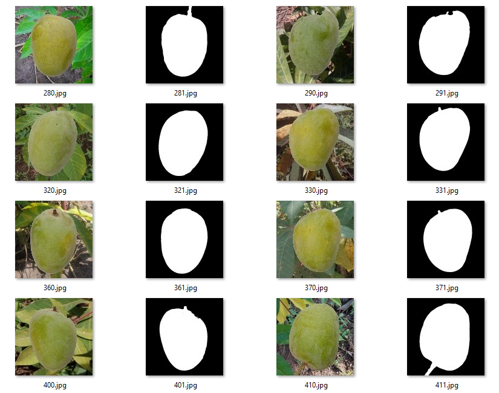
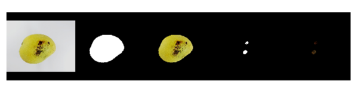

Nhận diện và trích xuất phần khuyết tật của quả xoài là một bài toán quan trọng phục vụ trong việc tự động hóa quá trình sản xuất. Bài viết này sẽ trình bày về việc hiện thực hóa các thuật toán xử lý ảnh cùng với đó là tạo ra dữ liệu để training cũng như sử dụng model U-net để nhận diện những điểm ảnh thuộc quả xoài và phần khuyết tật của quả xoài.
Giới thiệu
Mô hình này sẽ gồm 2 giai đoạn chính đó là Image Segmentation nhận diện vùng chứa quả xoài và Image Segmentation nhận diện vùng chứa phần khuyết tật. Với đầu vào là một bức ảnh bất kỳ chứa quả xoài, mô hình này sẽ nhận diện vùng chứa quả xoài dưới dạng binary image. Tiếp đó, mô hình sẽ phải đưa ra được những vùng được đánh giá là khuyết tật ở trong mask của binary image đã được nhận diện ở trên và tính toán ra tỉ lệ phần trăm so với vùng chứa quả xoài. Tôi đề xuất sử dụng kiến trúc mạng U-net để thực hiện giai đoạn 1 và thuật toán xử lý ảnh binary threshold cải tiến để thực hiện giai đoạn 2.
Giai đoạn Image Segmentation sử dụng CNN
Convolutional Neural Networks là một loại Thuật toán Deep learning lấy hình ảnh làm đầu vào và tìm hiểu các tính năng khác nhau của hình ảnh thông qua các bộ lọc. Điều này cho phép họ tìm hiểu các đối tượng quan trọng có trong hình ảnh, cho phép họ phân biệt hình ảnh này với hình ảnh kia.
CNN có hiệu suất tương tự như các Neuron Network được kết nối đầy đủ thông thường. Các CNN này có các trọng số có thể học hỏi từ đầu vào và độ chệch. Mọi nơ-ron được kết nối trong mạng đều nhận được đầu vào và thực hiện một sản phẩm chấm trên đó. Điều này tiến hành theo kiểu phi tuyến tính. Có một chức năng điểm số có thể phân biệt ở cuối. Hàm này bao gồm các điểm số mà chúng ta thu được từ các lớp khác nhau của mạng nơ-ron. Cuối cùng, một hàm mất mát ở cuối để đánh giá hiệu suất của mô hình. Mạng nơ-ron tích chập khác với Mạng nơ-ron tiêu chuẩn ở chỗ có một giả định rõ ràng về đầu vào là một hình ảnh.
U-net
Toàn bộ kiến trúc không hề sử dụng một lớp fully connected nào. Các mô hình end-to-end thông thường, lớp kế cuối của mạng sẽ là các lớp fully connected để kết nối các đặc trưng đã phân tích được nhằm đưa ra kết quả dự đoán. Tuy nhiên, ở kiến trúc U-net, việc kết nối các đặc trưng sẽ do nửa thứ 2 của “chữ U” đảm nhận, điều này giúp mạng không cần mạng fully connected, do đó có thể chấp nhận input với kích thước bất kì.
U-net sử dụng Phương pháp đệm (Padding method), điều này giúp kiến trúc có thể phân đoạn hình ảnh được hoàn toàn. Phương pháp này đặc biệt quan trọng khi segment cho các hình ảnh, nếu không, độ phân giải có thể bị hạn chế bởi dung lượng của bộ nhớ GPU.
Đối với bài toán Segmentation, hệ đo được sử dụng là IOU (Intersection over Union). Hệ đo này cho thấy tỉ lệ phần diện tích giao so với phần diện tích liên hiệp. Hệ đo này có phương trình như sau: $$ IoU=\frac{|A\cap{B}|}{|A\cup{B}|} $$
Trong đó $A$ diện tích vùng mà model nhận diện, $B$ là vùng thực tế.
Input của model sẽ là ảnh màu có kích thước $128x128x3$ và output là ảnh trắng đen có kích thước 128x128x1, tổng params: 6,667,639, params có thể train: 6,667,639, params không thể train: 0
Tìm kiếm data
Sử dụng 2 dataset 1 là hình ảnh những quả xoài bình thường không dị tật:
- https://www.kaggle.com/code/agbajeabdullateef/mango-disease-classification/notebook 2 là hình ảnh những quả xoài khuyết tật xen kẽ(\ref{fig:xoaikhuyetat}):
- https://data.mendeley.com/datasets/fmfncxjz3v/1 Tất cả hình ảnh đều có dạng background trắng xám và quả xoài nằm ở trung tâm, kích thước không đồng bộ.
Data thô của quả xoài khuyết tật
Khởi tạo dataset
Vì background có dạng đơn giản nên chúng ta có thể dùng thuần xử lý ảnh để lọc ra những pixel chứa quả xoài. Đầu tiên là trích xuất các đặc trưng về màu. Chuyển tất cả ảnh về hệ màu HSV (Hue, Satuaration, Value).Lấy một vài ảnh để đo thông số HSV nhận thấy: background có thông số xấp xỉ (0,0,218) và phần chứa xoài xấp xỉ (35,192,146). Chúng ta sẽ chỉ quan tâm đến 2 giá trị Satuaration và Value vì dataset có nhiều loại xoài với nhiều màu khác nhau, thông số Hue sẽ ko đáng tin cậy. Ý tưởng ban đầu là tìm trung bình các thông số trên của ảnh và tiến hành lọc ra những pixel khác với trung bình (lớn hơn thì là vùng chứa xoài, bé hơn thì là background) với các hằng số bias và hệ số sàn với từng giá trị. Từ đó có thể hình thành phương trình như sau:
$$ o(x,y)= 255 \text{ if } f(x,y)>b $$
$$ o(x,y)= 0 \text{ else} $$
(1)
Với $o(x,y)$ là pixel có tọa độ $(x,y)$ của ảnh đầu ra
$f(x,y)$ là giá trị tính toán pixel có tọa độ $(x,y)$ của ảnh đầu vào có công thức $$ f(x,y)=h(x,y)\times C_h+s(x,y)\times C_s+v(x,y)\times C_v $$
$h(x,y),s(x,y),v(x,y)$ giá trị hsv tại pixel có tọa độ $(x,y)$
$C_h,C_s,C_v$ là hằng số bias $$ b=((m_h+fl_h)\times C_h+(m_s+fl_s)\times C_s+(m_a+fl_v)\times C_v)\times b_G $$
Kết quả thu được sẽ có dạng như hình
Data Augmentation
Vì các background có dạng quá đơn giản nên kết quả train sẽ bị khóa cố định trong 1 vài trường hợp background cụ thể model mới hoạt động tốt được, nên cần thiết phải tăng cường dữ liệu bằng cách thay thế các background đơn bằng background phức tạp. Ở đây, ta chọn các background có độ chi tiết cao như ở ngoài vườn cây.
Dataset cuối cùng sẽ có dạng như hình
 ### Training Chúng ta sẽ dùng biến thiên tốc độ học để điều chỉnh khi gần tới cực tiểu của model và save model sau mỗi epoch dưới tên ‘model.h5’Kết quả training, IoU trung bình đạt 0.7066

Giai đoạn Image Segmentation dùng Digital Image Processing
Tổng quan
Sau khi chúng ta đã lọc ra được những pixel của quả xoài bằng model U-net, chúng ta tiến hành lọc ra những phần khuyết tật. Bằng mắt thường chúng ta dễ dàng nhận ra phần khuyết tật là phần có màu sẫm hơn bình thường, thậm chí là màu đen nâu, vậy cơ chế chúng ta đưa ra sẽ làm tìm những vùng đó bằng thuật toán tìm trung bình như (1).\
Tiền xử lý dữ liệu vào
Để đạt được kết quả tốt nhất, chúng ta phải loại bỏ đi những thứ khiến thuật toán trung bình bị sai lệch, đầu tiên là đổ bóng của hình, chúng ta sẽ hạn chế việc một bên tối và một bên sáng do ánh sáng chiếu từ một hướng trên quả xoài bằng cách nâng sáng những vùng tối và giảm sáng những vùng sáng, ở đây tác giả sử dụng thuật toán của HViktorTsoi(https://gist.github.com/HViktorTsoi/8e8b0468a9fb07842669aa368382a7df)

Tiếp đó chúng ta xử lý nhiễu cho ảnh và làm mịn ảnh để hạn chế những pixel lỗi dùng open CV.\
|
|
Tương tự với phần (1), ta lọc phần khuyết tật bằng phương pháp tượng tự nhưng sẽ được lấy theo mask là $5\times5$, nghĩa là 1 pixel có tọa độ là $(x,y)$ được xác định là lỗi nếu trên $50%$ pixel thuộc hình vuông có góc trên tọa độ $(x-2,y-2)$ và góc dưới tọa độ $(x+2,y+2)$ là lỗi.
Ngoài ra ta cần phải lấp đầy lỗ trống bên trong mask quả xoài nếu dự đoán bị khuyết phần trong do vấn đề cháy sáng dùng hàm floodfill của openCV:
|
|
Sau khi đã lọc ra được số lượng pixel của phần khuyết tật ta đem chia với số lượng pixel của quả xoài để ra được tỉ lệ khuyết tật
Thực nghiệm
Trong phần này tôi sẽ báo cáo về kết quả thực nghiệm của phương pháp đề xuất trên tập dữ liệu thực tế với data là những quả xoài bị hỏng. Tôi sẽ đánh giá hiệu năng dựa trên toàn bộ quá trình từ giai đoạn 1 đến hết giai đoạn 2.Mô hình này sẽ được đánh giá là tốt nếu như nhận diện đúng và đủ vùng của quả xoài cũng như vùng của những phần khuyết tất và thời gian đáp ứng của hệ thống phải dưới 1 từ quá trình input đến quá trình output. Toàn bộ quá trình được thực hiện trên hệ thống có cấu hình: Intel Core i3 10100f, Ram DDR4 32gb bus 2400Mhz
Những điểm tốt
Model nhìn chung khá chính xác đối với những background đơn giản như background trắng, phù hợp để đưa vào sử dụng trong công nghiệp với điều kiện điều chỉnh các hằng số cho phù hợp với môi trường hoạt động.
Có thể dùng model và thuật toán này để sử dụng cho các loại trái cây tương tự như: táo, đu đủ, …
Với một số background phức tạp, phương pháp này chưa đem lại độ chính xác có thể tin cậy.
Độ trễ quá cao và số lượng có thể nhận diện trên 1 giây thấp (xấp xỉ 2) chưa phù hợp với việc áp dụng vô những ngành công nghiệp hoa quả đòi hỏi năng suất cao.
Chưa dự đoán được hình dạng thực tế của quả xoài trong không gian 3 chiều để dự đoán ra diện tích phần khuyết tật một cách chính xác.
Tổng kết
Nhìn chung model đã đạt đến độ chính xác cần thiết để áp dụng vào thực tế. Những doanh nghiệp nhỏ và vừa có thể dùng giải pháp này để loại bỏ những quả xoài không mong muốn, tăng chất lượng nông sản một cách tự động, đem đến khách hàng những quả xoài chất lượng nhất. Nhưng không dừng lại ở đó, giải pháp này đòi hỏi có những tinh chỉnh, nâng cấp trực tiếp vào thuật toán xử lý, phải gia tăng chất lượng của thuật toán, giảm thời gian phản hồi cũng như tăng độ chính xác tiệm cận mức tuyệt đối. Ngoài ra giải pháp này cũng cần tăng độ chính xác với những background phức tạp để ứng dụng trong việc chăm sóc xoài tự động, loại bỏ những quả hỏng từ khi còn trên cây.
Một số hình ảnh sử dụng thực tế của mô hình được tích hợp trong phần mềm camera: